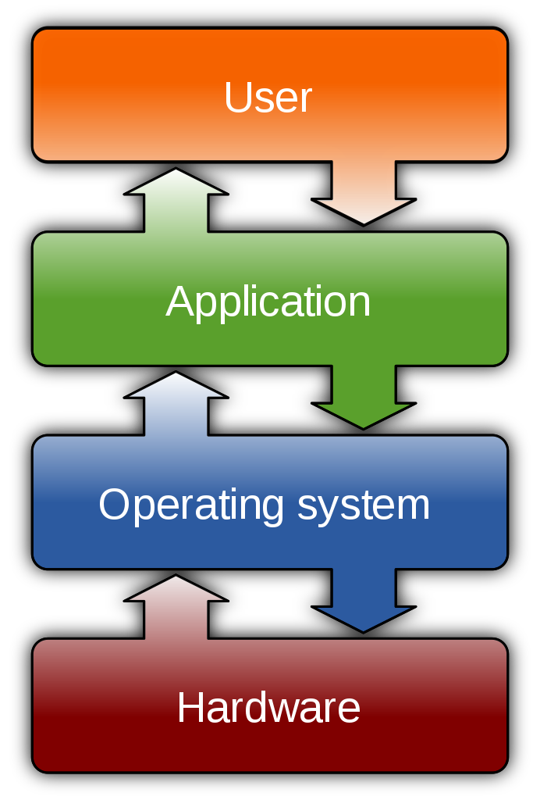

Számítástechnika és operációs rendszerek története
Operációs rendszerek feladatai

- alapvető (egységes) szolgáltatások biztosítása a programok felé
- komunikáció a hardware és a szoftware között
- felhasználói felület biztosítása
Az operációs rendszer részei
Forrás: Wikipedia: Operating system
Kernel
Alapvető vezérlés biztosítása a hardware felett a frimware és eszköz driver-ek segítségével.
- Program végrehajtás
- Megszakítások kezelése: környezettel való kommunikáció
- CPU módok kezelése
- Memória kezelés
- Virtuális memória kezelés
- Párhuzamosítás (Multitasking)
- Meghajtókon lévő tárhely kezelése
- Perifériák kezelése
Hálózat kezelés
Komunikáció más számítógépekkel.
Biztonság és biztonságosság
Ne történjen szándékos károkozás. Ne történjen véletlen meghibásodás.
Felhasználói felület
Komunikáció biztosítása a számítógép (hardware és szoftware) és a felhasználó között. Lehet grafikus vagy szöveges felület.
Történeti áttekintés
Mainframes
Nincs operációs rendszer, a felhasználók és programok közvetlenül kezelik a hardware-t.
Mini-számítógépek (1960)
Hardware specifikus operációs rendszerek.
Unix (1960) első verziója az első széles körben elterjedt operációs rendszerek egyike.
Micro-számítógépek (1970)